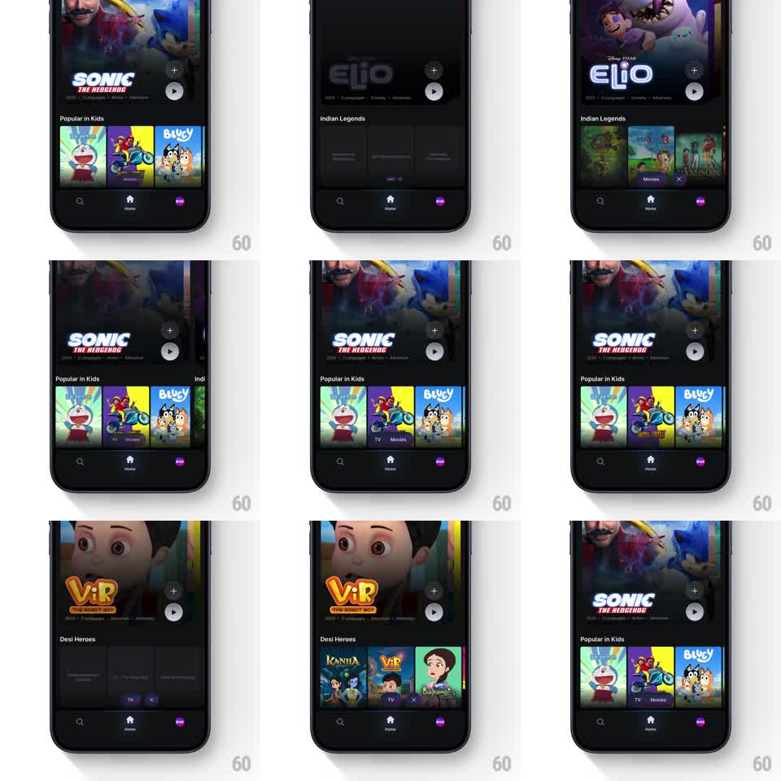

Media
Frame-by-frame

Rebuild this interaction 1:1: JioHotstar's floating filter pill - TV and Movies chips in a pill above the tab bar re-filter the whole home page, dimming and swapping the hero and rails, with an X to clear back to everything.

Rebuild this interaction 1:1: JioHotstar's floating filter pill - TV and Movies chips in a pill above the tab bar re-filter the whole home page, dimming and swapping the hero and rails, with an X to clear back to everything.
## Integration
Integration: stack-agnostic spec - springs given as stiffness/damping, timed motions as duration + curve; map every value to your framework and animation library of choice.
## Scene
JioHotstar home, dark: full-bleed hero (Sonic / Elio / ViR: The Robot Boy) with + and play buttons, content rails below ("Popular in Kids", "Indian Legends", "Desi Heroes"), the standard bottom tab bar, and a floating pill just above it holding "TV" and "Movies" chips (plus an X once a filter is active).
## Motion spec
Pattern: floating filter pill driving a whole-page content swap.
- Tap a chip: it fills purple (150ms, spring ~400/20), the pill extends to reveal the X (width spring, 200ms), and the page dims to 40% with a slight blur (250ms) as a loading shimmer passes once over the rails.
- The hero crossfades to filtered content (300ms) with the title lockup sliding up 12px as it lands; rails rebuild with posters fading in row by row (60ms stagger per row, top to bottom).
- Selecting the other chip repeats the swap; tapping the active chip or the X clears it - the pill collapses back (X slides out, 200ms) and the page restores with the same dim-and-rebuild in reverse order.
## Calibration
- The pill floats above the tab bar, never fused to it - soft shadow, clear gap.
- Dim-and-rebuild is fast enough to read as filtering, not navigation - total swap under 700ms.
## Reduced motion
Chip fills instantly; page crossfades without dim or stagger (250ms).
## Don't miss
- The hero's + and play buttons stay put through the crossfade - only the artwork and title swap.
- The X appears only when a filter is active, and it leaves before the pill finishes collapsing.